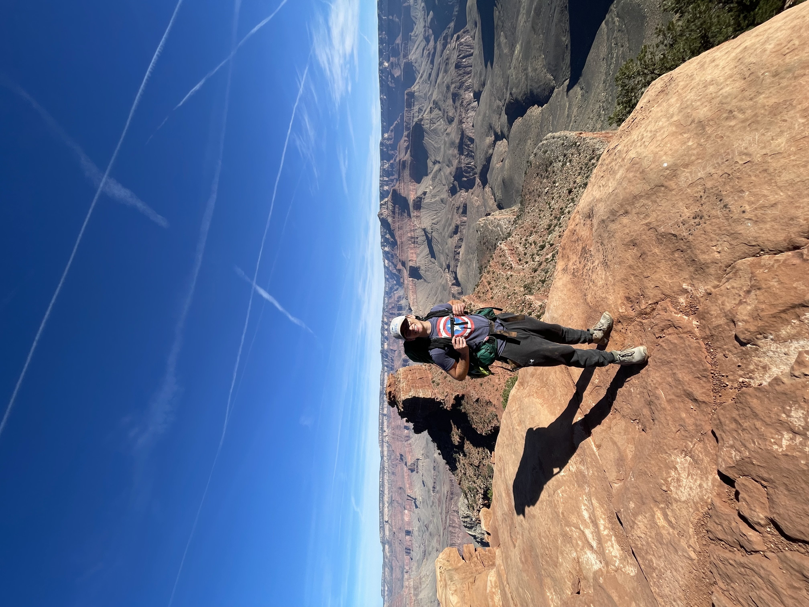
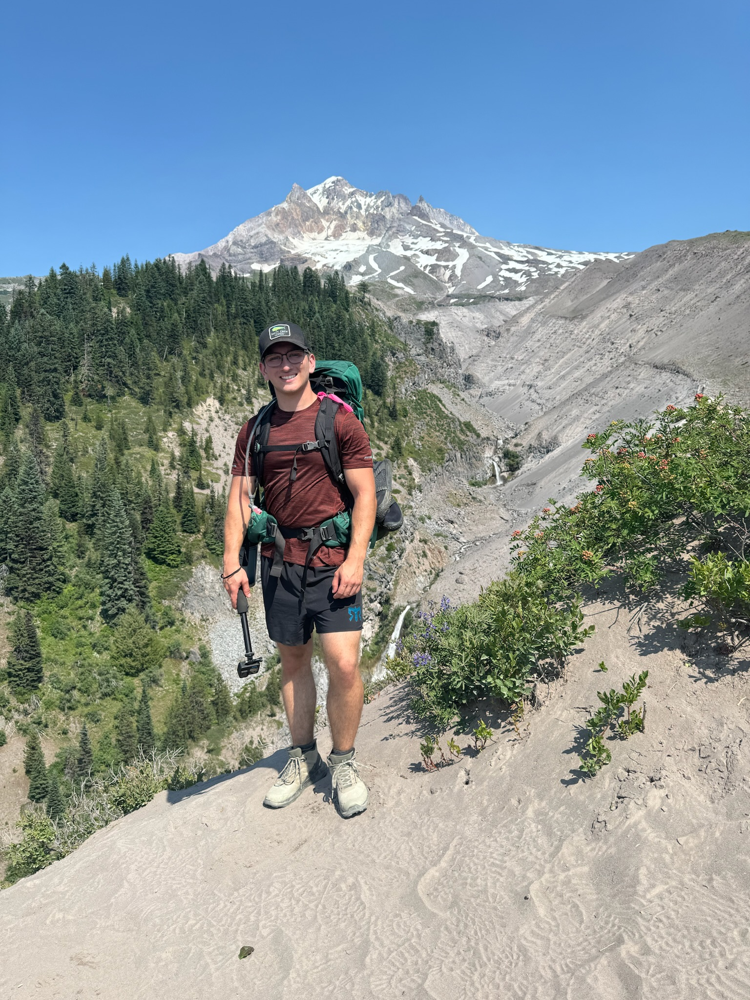

Images of Me



Electrician | Sales Professional | Eagle Scout
I’m a dedicated and versatile professional with over 3 years of hands-on experience as an electrician and 2 years in sales, covering powersports and insurance. My technical skills are complemented by a passion for problem-solving and detail-oriented thinking, which I apply in both my professional and personal life.
As an Eagle Scout and former nationally ranked powerlifter, I’ve cultivated a strong sense of discipline, leadership, and perseverance. Beyond work, I’m an avid traveler, backpacker, and hiker, always seeking new challenges and experiences.
With an Associate’s degree in SolidWorks CAD Design, I’m eager to find fulfilling work that pushes me intellectually and allows me to leverage both my technical background and sales experience.
I am currently diving into the web development industry and honing my skills in this dynamic field. This webpage serves as a platform to share my progress, showcase my projects, and demonstrate my capabilities. I believe that continuous learning and adapting are crucial in the ever-evolving landscape of technology, and I'm excited to explore the possibilities that web development offers.